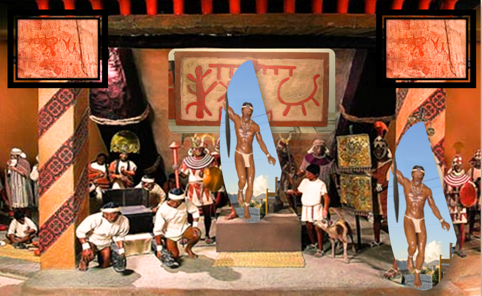
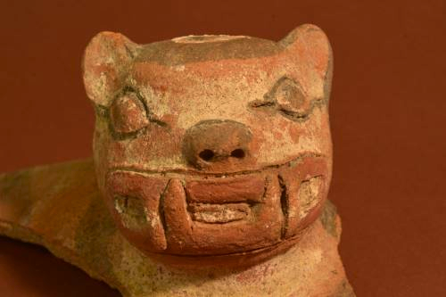

La provincia de Jaén es una próspera provincia en el Alto Marañón nororiente del Perú que hasta la fecha aún forma parte del departamento de Cajamarca. Su economía está basada en la agricultura, el comercio, la exportación de café, entre otros.
Jaén es llamada también Tierra de los Bravos Bracamoros. Esto, a raíz del protagonismo de los Bracamoros en el área comprendida entre los ríos Chinchipe y Marañón. Sin embargo, la jurisdicción de Jaén contenía muchos grupos étnicos (Chamayas, Tomependas, Nehipes, Chirinos, Pericos, Huambucos, etc.) los cuales, al igual que los Bracamoros en su desplazamiento del río Zamora (Ecuador), coexistían y fueron la base para los repartimientos en esta área geográfica.
Ubicada en Montegrande y descubierta por el arqueólogo peruano Quirino Olivera, es la primera construcción en la Amazonía destinada a la veneración y culto religioso con una antigüedad de 5 mil 300 años, la cual está formada por una gran espiral de 400 m2. La espiral es el símbolo más antiguo y universal de la historia de la humanidad y su significado está vinculado al ciclo de la vida.
Donde se han encontrado una gran cantidad de restos arqueológicos como cerámicas, batanes de piedra, artefactos, enterramientos humanos y fogones
También, se encontró una pieza de cerámica que representa la cabeza de un jaguar u otorongo, animal amazónico considerado sagrado en las culturas preincas, que estaba boca abajo y al costado de un “ritual de culto al fuego” o gran quema que constituye un evento posterior en el periodo Formativo Temprano, refirió.
.webp)
Asimismo, se deduce hasta ahora que en este lugar había orfebrería. “A lo mucho se sabía que había cerámica y quizás textiles. Pero con estos hallazgos se evidencia que hubo producción metalúrgica en este asentamiento urbano mochica”